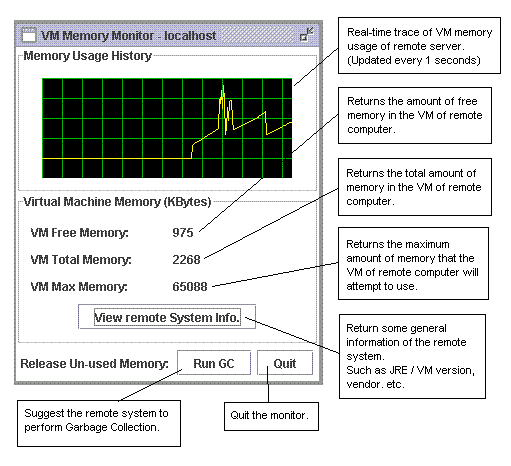

One of the great beauty of JAVA is that it poccess automatic garbage collection, where developers are no longer required to write programs to handle the low-level operation about memory allocation. Since JAVA will do that for us to release un-used memory back to the operating system, with the compromisation of a bit slower performance than C / C++ / VB applications.
RMIAdmin facilitates the management of performance by means of displaying the real-time memory usage statistics within the JVM (Java Virtual Machine) of remote computers, and allow administrators / developers / users to trigger garbage collection freely.
* Note that JAVA cannot force the JVM to release un-used memory, it can only suggest the JVM to perform garbage collection, but this does not guarantee when it will happen and we have no way to predict the actual execution time.
* For details, please visit the JAVA's official website or click HERE.
Follow the instructions below to use the memory monitor:
-
First, go to the top menu bar, select "Configure" -> "Manage Performance".
- Choose your target server to operate by clicking the "Select Server" button.
-
All the managed server will be loaded into a list box, simply choose your preferred
server, and click "OK" to continue.

-
This will open up a "Memory Monitor" for the specified server as below.

|
|
Copyright 2005 © RMIAdmin. All rights reserved. |